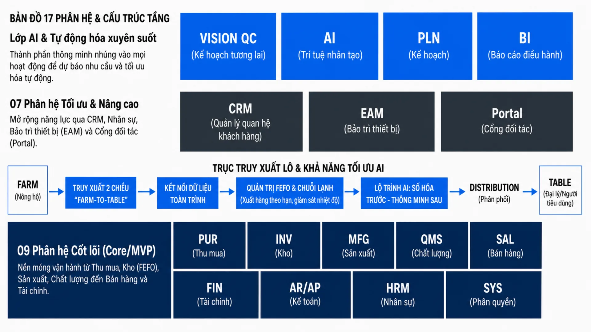

Nền tảng phần mềm vận hành
sản xuất & phân phối sữa
Một nền tảng hợp nhất cho toàn bộ chuỗi giá trị Fidimilk — từ nguyên vật liệu, sản xuất, chất lượng, kho, phân phối đến khách hàng, công nợ, tài chính và nhân sự — với AI nhúng xuyên suốt để dự báo, tối ưu và hỗ trợ con người ra quyết định.
1 · Tầm nhìn & đặc thù ngành
Mục tiêu cốt lõi
Một nguồn dữ liệu duy nhất
Mọi phòng ban làm việc trên cùng tập dữ liệu, không nhập liệu trùng lặp.
Truy xuất trọn vòng
Từ lô sữa nguyên liệu đến từng thùng trên kệ đại lý — thu hồi nhanh khi có sự cố.
Vận hành theo hạn dùng
Quản lý date-code, FEFO, cận date và thu hồi hàng hết hạn tự động.
Quyết định bằng dữ liệu + AI
Dự báo nhu cầu, kế hoạch sản xuất, tối ưu tồn kho và tuyến giao.
Hỗ trợ con người
AI đưa gợi ý & cảnh báo; con người xác nhận và chịu trách nhiệm.
Ràng buộc đặc thù ngành sữa
Đây là các ràng buộc định hình toàn bộ thiết kế của hệ thống:
| Đặc thù | Hệ quả lên thiết kế |
|---|---|
| Sản phẩm dễ hư, hạn dùng ngắn | Bắt buộc FEFO, quản lý cận date, chuỗi lạnh |
| Truy xuất theo lô/mẻ bắt buộc | Mỗi mẻ gắn lô NVL, kết quả QA và các lô bán ra |
| Nguyên liệu biến động chất lượng | Kiểm nghiệm đầu vào & định giá sữa theo chất lượng từng xe |
| Công thức có hiệu suất & hao hụt | Quản lý định mức, hao hụt (yield/loss), tái chế (rework) |
| Kênh phân phối nhiều tầng | DMS/van sales, khuyến mãi, trưng bày (trade marketing) |
| Công nợ & trả hàng | Bán gối đầu, hạn mức tín dụng, đổi/trả hàng cận date |
| Tuân thủ ATTP | HACCP/ISO 22000, hóa đơn điện tử, kê khai thuế |
Nguyên tắc thiết kế
- Modular & API-first — mỗi phân hệ độc lập, giao tiếp qua API, triển khai được từng phần.
- Lấy lô/mẻ làm trung tâm —
Lot/Batchxuyên suốt sản xuất → kho → bán hàng. - Sự kiện & nhật ký — mọi thao tác trọng yếu đều ghi vết (audit trail).
- Cấu hình hơn code cứng — định mức, quy trình duyệt, bảng giá, chính sách công nợ đều cấu hình được.
- Mobile-first cho hiện trường — kho, giao hàng, thu mua sữa, kiểm kê dùng app di động có offline.
- AI như một lớp dịch vụ — tách riêng, gọi qua API, human-in-the-loop ở mọi quyết định trọng yếu.
- Đa chi nhánh / đa kho / đa công ty ngay từ đầu để mở rộng.
2 · Bản đồ phân hệ

17 phân hệ chia theo 3 mức độ ưu tiên: Core — MVP Tối ưu Nâng cao Xuyên suốt
| # | Phân hệ | Mã | Mức độ | Mô tả ngắn |
|---|---|---|---|---|
| 1 | Nền tảng & Quản trị hệ thống | SYS | Core | Người dùng, phân quyền, tổ chức, audit |
| 2 | Master Data (Danh mục) | MDM | Core | Sản phẩm, NVL, đối tác, kho, quy đổi ĐVT |
| 3 | Mua hàng & Nhà cung cấp | PUR | Core | PR/PO, nhận hàng, thu mua sữa nguyên liệu |
| 4 | Kho & Tồn kho | INV | Core | Nhập/xuất/chuyển, lô–date, FEFO, chuỗi lạnh |
| 5 | Sản xuất & Công thức | MFG | Core | BOM, lệnh SX, mẻ, hao hụt, rework |
| 6 | Chất lượng (QA/QC) | QMS | Core | Kiểm nghiệm, COA, HACCP, thu hồi |
| 7 | Bán hàng & Phân phối (DMS) | SAL | Core | Đơn hàng, khuyến mãi, tuyến giao, van sales |
| 8 | Khách hàng & CRM | CRM | Tối ưu | Đại lý/điểm bán, chăm sóc, khiếu nại |
| 9 | Công nợ & Thanh toán | AR/AP | Core | Phải thu/phải trả, hạn mức, đối soát |
| 10 | Kế toán & Tài chính | FIN | Core | Sổ cái, HĐĐT, thuế, giá thành, BCTC |
| 11 | Nhân sự | HRM | Tối ưu | Hồ sơ, chấm công, ca kíp, đào tạo |
| 12 | Tiền lương | PAY | Tối ưu | Bảng lương, BHXH, lương sản phẩm/KPI |
| 13 | Tài sản & Bảo trì thiết bị | EAM | Nâng cao | Máy móc, bảo trì phòng ngừa, OEE |
| 14 | Kế hoạch & Dự báo (S&OP) | PLN | Nâng cao | Dự báo nhu cầu, MRP, kế hoạch SX |
| 15 | Báo cáo & BI / Dashboard | BI | Tối ưu | Chỉ số điều hành, phân tích, cảnh báo |
| 16 | Cổng đối tác (Portal) | POR | Nâng cao | Đại lý/NCC tự đặt hàng, tra cứu công nợ |
| 17 | Lớp AI & Tự động hóa | AI | Xuyên suốt | Dự báo, tối ưu, thị giác máy, trợ lý |
3 · Đặc tả phân hệ nghiệp vụ
Nền tảng & Quản trị hệ thống
CoreNền móng dùng chung: người dùng, vai trò, quyền (RBAC/ABAC), cấu trúc tổ chức, cấu hình hệ thống, workflow duyệt, audit, thông báo & cảnh báo.
Master Data / Danh mục
CoreChuẩn hóa dữ liệu nền: SKU (điều kiện bảo quản, shelf-life, quy tắc cận date), NVL (chỉ tiêu chất lượng), đối tác, kho & vị trí, ĐVT & hệ số quy đổi, bảng giá, thuế.
Mỗi SKU khai báo nhiệt độ bảo quản, shelf-life, ngưỡng chặn bán khi cận date; NVL sữa tươi khai chỉ tiêu béo, đạm, tỷ trọng, vi sinh, kháng sinh.
Mua hàng & Thu mua sữa nguyên liệu
CoreQuản lý đầu vào: PR → so sánh NCC → PO → nhận hàng (GRN) → 3-way match (PO–GRN–Invoice). Quy trình riêng cho thu mua sữa tươi.
Kho & Tồn kho
CoreTồn kho theo lô–hạn dùng, đa chiều (SKU × lô × kho × vị trí × trạng thái). FEFO, kiểm kê, chuỗi lạnh, cảnh báo cận/hết date, định giá tồn kho.
Sản xuất & Công thức
CoreBOM đa cấp với định mức, hiệu suất & hao hụt; định tuyến công đoạn; lệnh sản xuất sinh mẻ gắn lô NVL vào–thành phẩm ra; ghi tiêu hao thực tế, rework; tính giá thành theo mẻ.
Truy xuất 2 chiều (mẻ ↔ lô NVL ↔ lô bán ra); CIP là một công đoạn; HSD sinh tự động theo NSX + shelf-life; kiểm soát chéo nhiễm.
Chất lượng (QA/QC)
CoreKiểm nghiệm 3 điểm (đầu vào / trong quá trình / thành phẩm), COA, hold/release lô, xử lý không phù hợp (NCR/CAPA), HACCP/CCP, thu hồi & truy xuất trong vài phút, khiếu nại chất lượng.
Kiểm kháng sinh/vi sinh bắt buộc; lưu mẫu đối chứng theo lô; nhật ký nhiệt độ thanh trùng là hồ sơ ATTP; mock recall định kỳ.
Bán hàng & Phân phối (DMS)
CoreKênh & cấp phân phối (NPP→đại lý→điểm bán); bảng giá đa cấp; khuyến mãi & trade marketing; đơn hàng + duyệt hạn mức + FEFO + HĐĐT; DMS di động (tuyến MCP, check-in GPS, thu tiền, ePOD, kiểm tồn đại lý); đổi/trả hàng.
Khách hàng & Chăm sóc
Tối ưuHồ sơ 360° đại lý/điểm bán; census điểm bán & độ phủ; chăm sóc & khiếu nại (liên kết QMS); chương trình thân thiết; kênh người tiêu dùng + tra cứu QR.
Công nợ & Thanh toán
CorePhải thu (hạn mức tín dụng, aging, nhắc nợ tự động, chặn bán khi quá hạn); phải trả (NCC & nông hộ); thu/chi tại điểm bán; đối soát ngân hàng; bù trừ; bảng kê đối chiếu định kỳ.
Bán gối đầu phổ biến → kiểm soát hạn mức chặt; thanh toán nông hộ theo chu kỳ dựa trên sản lượng đã đối soát.
Kế toán & Tài chính
CoreSổ cái + bút toán tự động từ nghiệp vụ; kế toán kho & giá vốn theo lô/mẻ; hóa đơn điện tử; thuế; ngân sách & dòng tiền; BCTC & báo cáo quản trị theo chi nhánh/dòng SP; khóa sổ, phân bổ, khấu hao.
Nhân sự
Tối ưuHồ sơ, hợp đồng, chứng chỉ ATTP; chấm công & ca kíp (nhà máy 3 ca), phép, công tác thị trường (liên kết check-in DMS); tuyển dụng, đào tạo HACCP, đánh giá KPI; an toàn lao động & sức khỏe định kỳ.
Tiền lương
Tối ưuLương cơ bản + phụ cấp + lương ca/đêm + lương sản phẩm (theo mẻ) + thưởng KPI bán hàng; tính công → bảng lương → BHXH → thuế TNCN; hoa hồng theo doanh số/độ phủ; phiếu lương điện tử.
Tài sản & Bảo trì thiết bị
Nâng caoDanh mục thiết bị (dây chuyền, bồn, máy thanh trùng, kho/xe lạnh); bảo trì phòng ngừa & sự cố; theo dõi OEE & downtime; hiệu chuẩn thiết bị đo (liên kết QMS).
Kế hoạch & Dự báo (S&OP)
Nâng caoDự báo nhu cầu theo SKU/vùng/kênh/mùa (AI); MRP (kế hoạch bán → SX → nhu cầu NVL → đề nghị mua); kế hoạch theo năng lực & shelf-life; tồn an toàn; chu kỳ S&OP đồng thuận.
Báo cáo & Dashboard
Tối ưuDashboard theo vai trò; KPI chuẩn (doanh số & độ phủ, OEE, tỷ lệ đạt QC, hao hụt SX, vòng quay tồn kho, % hàng cận date, tuổi nợ, biên LN theo SKU/kênh); cảnh báo & drill-down; lịch gửi báo cáo.
Cổng đối tác (Partner Portal)
Nâng caoCổng đại lý (tự đặt hàng, xem giá & khuyến mãi, tra công nợ, tải chứng từ); cổng NCC/nông hộ (đơn mua, sản lượng, đối soát); tra cứu truy xuất QR cho người tiêu dùng.
Ma trận liên kết giữa các phân hệ
| Từ → Đến | Dữ liệu truyền |
|---|---|
| PUR → INV | Nhập kho NVL/sữa theo lô |
| INV → MFG | Cấp NVL theo định mức (FEFO) |
| MFG → INV | Nhập thành phẩm theo lô + HSD |
| QMS ↔ MFG/INV/PUR | Trạng thái lô (hold/release/reject) |
| SAL → INV | Phân bổ & xuất lô (FEFO) |
| SAL → AR | Ghi công nợ, thu tiền, đổi trả |
| PUR → AP | Công nợ NCC/nông hộ |
| MFG/PUR/SAL → FIN | Bút toán, giá thành, giá vốn |
| HRM → PAY | Công, ca, KPI → lương |
| SAL → PLN → MFG/PUR | Bán → dự báo → kế hoạch SX & mua |
| Tất cả → BI/AI | Dữ liệu phân tích & huấn luyện |
4 · Đề xuất ứng dụng AI & tự động hóa
Nguyên tắc: AI hỗ trợ con người, không thay thế — mọi quyết định trọng yếu có human-in-the-loop. Phân theo độ chín triển khai:
Tầng 1 Tự động hóa quy tắc (Rule/RPA) Tầng 2 Dự báo & tối ưu (ML/OR) Tầng 3 AI nâng cao (Vision/LLM/IoT)
A · Dự báo & kế hoạch
| # | Ứng dụng | Tầng | Giá trị |
|---|---|---|---|
| 1 | Dự báo nhu cầu (SKU × vùng × kênh × mùa, khuyến mãi, thời tiết) | 2 | Giảm hết hàng & hàng cận date; nền cho MRP |
| 2 | Tối ưu tồn kho & tồn an toàn động | 2 | Cân đối thiếu hàng vs ứ cận date |
| 3 | Xếp lịch sản xuất tối ưu (OR) | 2/3 | Tăng hiệu suất dây chuyền, giảm hao phí |
B · Sản xuất & chất lượng
| # | Ứng dụng | Tầng | Giá trị |
|---|---|---|---|
| 4 | Vision QC — phát hiện lỗi bao bì, date-code, dị vật | 3 | Giảm lỗi lọt thị trường, giảm khiếu nại |
| 5 | OCR + LLM đọc COA/chứng từ/hóa đơn NCC | 3 | Giảm nhập tay, tăng tốc 3-way match |
| 6 | Dự đoán chất lượng & tối ưu công thức phối trộn | 3 | Đạt tiêu chuẩn với chi phí thấp nhất |
| 7 | Bảo trì dự đoán (từ IoT/OEE) | 3 | Giảm dừng máy & rủi ro hỏng lô do mất lạnh |
| 8 | Giám sát chuỗi lạnh thông minh (IoT + AI) | 1→3 | Cảnh báo tức thời, đánh giá ảnh hưởng lô |
C · Bán hàng & phân phối
| # | Ứng dụng | Tầng | Giá trị |
|---|---|---|---|
| 9 | Tối ưu tuyến giao hàng (route optimization) | 2 | Giảm chi phí & thời gian, giao FEFO |
| 10 | Gợi ý đơn hàng thông minh cho salesman | 2 | Tăng độ phủ SKU, giảm ứ cận date ở đại lý |
| 11 | Phân khúc & dự báo rời bỏ (churn) đại lý | 2 | Chăm sóc đúng đối tượng |
| 12 | Phát hiện gian lận (check-in giả, đơn ảo, lạm dụng KM) | 2 | Bảo vệ ngân sách & kỷ luật thị trường |
| 13 | Định giá & khuyến mãi tối ưu (đo uplift, ROI) | 3 | Ngân sách khuyến mãi hiệu quả |
D · Tài chính, nhân sự & điều hành
| # | Ứng dụng | Tầng | Giá trị |
|---|---|---|---|
| 14 | Chấm điểm & dự báo rủi ro công nợ; hạn mức động | 2 | Giảm nợ xấu, bảo vệ dòng tiền |
| 15 | Phát hiện bất thường kế toán/dòng tiền | 2 | Cờ bút toán/chi phí bất thường, trùng thanh toán |
| 16 | Trợ lý dự báo dòng tiền (AR – AP – lương – mua) | 2 | Chủ động dòng tiền |
| 17 | Tự động hóa chấm công – lương (RPA) | 1 | Giảm thao tác tay & sai sót |
| 20 | Cảnh báo điều hành chủ động (cận date, tồn thấp, QC fail…) | 1→2 | Phát hiện sớm kèm gợi ý hành động |
| 22 | Phân tích khiếu nại & phản hồi (NLP) | 2 | Phát hiện sớm vấn đề chất lượng theo lô/vùng |
Lộ trình đưa AI vào
| Giai đoạn | Ưu tiên AI / tự động hóa |
|---|---|
| Ngay (nền số hóa) | #17 RPA lương · #20 cảnh báo luật · #8 giám sát lạnh · #5 OCR (thí điểm) |
| Sau 3–6 tháng có dữ liệu | #1 dự báo · #2 tồn kho · #9 tuyến giao · #10 gợi ý đơn · #14 rủi ro công nợ |
| Nâng cao (6–18 tháng) | #3 xếp lịch SX · #4 Vision QC · #7 bảo trì dự đoán · #13 tối ưu KM |
5 · Mô hình dữ liệu
Các thực thể chính & quan hệ, làm cơ sở thiết kế database & API. Đây là mô hình khái niệm — khi hiện thực hóa bổ sung khóa ngoại, chỉ mục, ràng buộc.
Trục truy xuất lô (traceability spine)
Trục này cho phép truy xuất 2 chiều: từ lô thành phẩm bán cho khách → về mẻ sản xuất → về lô sữa nguyên liệu & nông hộ; và ngược lại phục vụ thu hồi (recall).
Các nhóm thực thể chính
| Nhóm | Thực thể tiêu biểu |
|---|---|
| Nền tảng & danh mục | Organization · Branch · Warehouse · Location · User · Role · Permission · AuditLog · Product · Material · UoM · UoMConversion · Partner · PriceList |
| Lô & tồn kho trục | Lot · StockItem · StockMove · StockTransfer · StockCount · ColdChainReading |
| Mua & thu mua sữa | PurchaseRequest · PurchaseOrder · GoodsReceipt · SupplierInvoice · MilkIntake · MilkQualityTest · MilkPricePolicy |
| Sản xuất & chất lượng | BOM · Routing · ProductionOrder · Batch · MaterialConsumption · ProductionLog · CostSheet · QualitySpec · Sample · QCTest · COA · NonConformance · CAPA · RecallCase |
| Bán hàng & CRM | SalesRoute · Outlet · VisitPlan · VisitCheckin · SalesOrder · SOLine · Promotion · Delivery · ePOD · SalesReturn · Complaint |
| Công nợ & tài chính | Receivable · Payable · CreditLimit · PaymentReceipt · PaymentVoucher · ChartOfAccounts · JournalEntry · EInvoice · FixedAsset |
| Nhân sự & lương | Employee · Shift · Attendance · SalaryStructure · Payroll · Commission |
| Kế hoạch & AI | DemandForecast · ProductionPlan · MRPRun · SafetyStockPolicy · Alert |
Lot(id, lot_code, item_type[product/material], item_id, mfg_date, exp_date, source[purchase/production], qc_status[hold/release/reject], origin_ref) — khi xuất kho, hệ thống phân bổ theo exp_date tăng dần (FEFO), loại lô qc_status≠release hoặc dưới ngưỡng min_sell_life_pct.6 · Kiến trúc hệ thống & công nghệ
Kiến trúc đề xuất: Modular Monolith hướng sự kiện — triển khai nhanh, chi phí thấp giai đoạn đầu, vẫn giữ ranh giới module rõ.
Công nghệ đề xuất
| Lớp | Công nghệ đề xuất | Ghi chú |
|---|---|---|
| Web frontend | React + Next.js, TypeScript, Tailwind | Bộ UI nghiệp vụ (Carbon/AntD) |
| Mobile | React Native hoặc Flutter | Offline-first cho kho & van sales |
| Backend | NestJS (Node) hoặc Spring Boot / .NET | Chọn theo năng lực đội |
| API | REST (chính) + GraphQL (BI/portal) | OpenAPI làm hợp đồng |
| Hàng đợi/sự kiện | Kafka hoặc RabbitMQ | Sự kiện lô/tồn/công nợ |
| CSDL giao dịch | PostgreSQL | JSONB, partition theo thời gian |
| Cache · Lưu trữ tệp | Redis · S3/MinIO | Bảng giá, tồn realtime; ảnh QC/COA |
| Data warehouse | ClickHouse / BigQuery / Snowflake | BI & huấn luyện AI |
| AI/ML | Python, LightGBM/XGBoost, Prophet, PyTorch | Dịch vụ tách riêng |
| LLM | API mô hình ngôn ngữ + RAG | Trợ lý, OCR, tóm tắt |
| Hạ tầng · Giám sát | Docker/K8s · Prometheus/Grafana · ELK | CI/CD, log tập trung |
Mô hình đa tổ chức
Mọi bản ghi giao dịch gắn company_id + branch_id để phân tách dữ liệu và báo cáo hợp nhất. Người dùng được cấp quyền theo phạm vi tổ chức (data scope).
Bảo mật & phân quyền
- RBAC + ABAC — vai trò gắn tập quyền; giới hạn dữ liệu theo thuộc tính (ví dụ giám sát vùng A chỉ thấy đại lý vùng A).
- Ma trận duyệt cấu hình theo giá trị/loại chứng từ (PO > X triệu cần giám đốc duyệt).
- Audit trail — ai · làm gì · khi nào · giá trị cũ/mới cho giá, công nợ, điều chỉnh kho, duyệt.
- 2FA cho vai trò nhạy cảm; mã hóa/che dữ liệu nhân sự, lương, khách hàng.
7 · Lộ trình triển khai
Nguyên tắc: số hóa vận hành trước → dữ liệu sạch → AI sau. Mốc thời gian tương đối, tùy nguồn lực đội phát triển.
Chuẩn bị
2–4 tuầnKhảo sát quy trình đang vận hành, thống nhất mã hóa (SKU/lô/chứng từ), dựng nền kỹ thuật & CSDL, xây SYS + MDM.
MVP lõi vận hành
2–4 thángChạy vòng lõi mua → kho → sản xuất → QC → bán → công nợ với truy xuất lô: INV (FEFO), PUR (gồm thu mua sữa), MFG, QMS, SAL cơ bản + AR, FIN cơ bản, tự động hóa Tầng 1.
Tiêu chí hoàn thành: truy xuất trọn vòng 1 lô từ nông hộ → thành phẩm → khách hàng; chốt được giá thành mẻ; công nợ khớp.
Phân phối & mở rộng
2–4 thángDMS di động (offline-sync), khuyến mãi & trade marketing, CRM, HRM + PAY, FIN đầy đủ (giá thành, thuế, BCTC), BI dashboard.
Thông minh hóa bằng AI
từ tháng 6+Dự báo nhu cầu → tối ưu tồn kho → gợi ý đơn; tối ưu tuyến giao; rủi ro công nợ động; OCR chứng từ; thí điểm Vision QC & bảo trì dự đoán.
Nâng cao & tối ưu
12–18 tháng+S&OP/MRP & xếp lịch SX tối ưu; EAM (bảo trì phòng ngừa, OEE); Portal đối tác + tra cứu QR; mở rộng AI (tối ưu KM, NLP khiếu nại, dự báo dòng tiền).
Rủi ro & khuyến nghị
- Chất lượng dữ liệu — master data & lô không chuẩn từ đầu sẽ làm sai truy xuất, giá thành, AI → đầu tư kỹ GĐ 0–1.
- Thói quen hiện trường — kho & salesman cần app dễ dùng, offline; đào tạo & đồng hành.
- Tuân thủ ATTP/thuế — bám HACCP/ISO 22000 & hóa đơn điện tử ngay từ thiết kế.
- Đừng làm AI quá sớm — ưu tiên số hóa & tự động hóa theo luật trước.
- Triển khai lặp (agile) — đi từng phân hệ, chạy thật, lấy phản hồi rồi mở rộng; tránh "big bang".
Phụ lục · Từ viết tắt & thuật ngữ
Tổng hợp các ký hiệu, từ viết tắt (tiếng Anh & tiếng Việt) và thuật ngữ nghiệp vụ dùng trong tài liệu này.
Mã phân hệ
| Mã | Viết đầy đủ | Nghĩa |
|---|---|---|
SYS | System & Administration | Nền tảng & quản trị hệ thống |
MDM | Master Data Management | Quản lý dữ liệu danh mục nền |
PUR | Purchasing | Mua hàng & thu mua sữa |
INV | Inventory | Kho & tồn kho |
MFG | Manufacturing | Sản xuất & công thức |
QMS | Quality Management System | Hệ thống quản lý chất lượng (QA/QC) |
SAL | Sales & Distribution | Bán hàng & phân phối |
CRM | Customer Relationship Management | Quản lý quan hệ khách hàng |
AR / AP | Accounts Receivable / Payable | Công nợ phải thu / phải trả |
FIN | Finance & Accounting | Kế toán & tài chính |
HRM | Human Resource Management | Quản trị nhân sự |
PAY | Payroll | Tiền lương |
EAM | Enterprise Asset Management | Quản lý tài sản & bảo trì thiết bị |
PLN | Planning (S&OP) | Kế hoạch & dự báo |
BI | Business Intelligence | Báo cáo & phân tích dữ liệu |
POR | Partner Portal | Cổng đối tác |
Sản xuất, kho & chất lượng
| Viết tắt | Viết đầy đủ | Nghĩa |
|---|---|---|
FEFO | First-Expired, First-Out | Xuất hàng theo hạn dùng gần nhất trước |
FIFO | First-In, First-Out | Nhập trước xuất trước (định giá tồn kho) |
BOM | Bill of Materials | Công thức / định mức nguyên vật liệu |
Lot / Batch | — | Lô nguyên liệu / mẻ sản xuất (trục truy xuất) |
NVL | — | Nguyên vật liệu |
SKU | Stock Keeping Unit | Mã hàng / đơn vị lưu kho |
UoM | Unit of Measure | Đơn vị tính |
NSX / HSD | — | Ngày sản xuất / Hạn sử dụng |
QA / QC | Quality Assurance / Control | Đảm bảo / kiểm soát chất lượng |
COA | Certificate of Analysis | Phiếu kết quả phân tích / chứng nhận chất lượng lô |
HACCP | Hazard Analysis & Critical Control Points | Phân tích mối nguy & điểm kiểm soát tới hạn |
ISO 22000 | — | Tiêu chuẩn hệ thống quản lý an toàn thực phẩm |
CCP | Critical Control Point | Điểm kiểm soát tới hạn |
NCR | Non-Conformance Report | Báo cáo không phù hợp |
CAPA | Corrective & Preventive Action | Hành động khắc phục & phòng ngừa |
CIP | Cleaning In Place | Vệ sinh dây chuyền tại chỗ |
TPC | Total Plate Count | Tổng số vi sinh vật hiếu khí |
OEE | Overall Equipment Effectiveness | Hiệu suất thiết bị tổng thể |
PM | Preventive Maintenance | Bảo trì phòng ngừa |
ATTP | — | An toàn thực phẩm |
Bán hàng & phân phối
| Viết tắt | Viết đầy đủ | Nghĩa |
|---|---|---|
DMS | Distribution Management System | Hệ thống quản lý phân phối (bán hàng hiện trường) |
NPP | — | Nhà phân phối |
GT / MT | General / Modern Trade | Kênh truyền thống / kênh hiện đại |
MCP | Monthly Coverage Plan | Kế hoạch tuyến / lịch viếng thăm điểm bán |
Van sales | — | Bán hàng & giao hàng lưu động theo tuyến |
ePOD | electronic Proof of Delivery | Chứng từ giao nhận điện tử (ký nhận) |
Sell-in / Sell-out | — | Bán vào đại lý / bán ra người tiêu dùng |
KPI | Key Performance Indicator | Chỉ số hiệu suất trọng yếu |
Tài chính, kế toán & nhân sự
| Viết tắt | Viết đầy đủ | Nghĩa |
|---|---|---|
PR / PO | Purchase Request / Order | Đề nghị mua / Đơn mua hàng |
GRN | Goods Receipt Note | Phiếu nhập kho / nhận hàng |
SO | Sales Order | Đơn bán hàng |
GL | General Ledger | Sổ cái kế toán |
COGS | Cost of Goods Sold | Giá vốn hàng bán |
HĐĐT | — | Hóa đơn điện tử |
GTGT / TNDN / TNCN | — | Thuế giá trị gia tăng / thu nhập doanh nghiệp / thu nhập cá nhân |
BHXH | — | Bảo hiểm xã hội |
BCTC | — | Báo cáo tài chính |
BCĐKT / KQKD / LCTT | — | Bảng cân đối kế toán / Kết quả kinh doanh / Lưu chuyển tiền tệ |
3-way match | — | Đối chiếu 3 chiều: PO – GRN – hóa đơn |
Công nghệ, dữ liệu & AI
| Viết tắt | Viết đầy đủ | Nghĩa |
|---|---|---|
ERP | Enterprise Resource Planning | Hệ thống hoạch định nguồn lực doanh nghiệp |
MVP | Minimum Viable Product | Phiên bản khả dụng tối thiểu |
API | Application Programming Interface | Giao diện lập trình ứng dụng |
BFF | Backend for Frontend | Lớp trung gian phục vụ giao diện |
REST / GraphQL | — | Chuẩn thiết kế API |
OLTP / OLAP | Online Transaction / Analytical Processing | Xử lý giao dịch / phân tích trực tuyến |
MRP | Material Requirements Planning | Hoạch định nhu cầu vật tư |
S&OP | Sales & Operations Planning | Hoạch định bán hàng & vận hành |
RBAC / ABAC | Role / Attribute-Based Access Control | Phân quyền theo vai trò / thuộc tính |
SSO / 2FA | Single Sign-On / Two-Factor Auth | Đăng nhập một lần / xác thực 2 lớp |
NFR | Non-Functional Requirements | Yêu cầu phi chức năng |
IoT | Internet of Things | Thiết bị kết nối (cảm biến nhiệt, GPS…) |
GPS | Global Positioning System | Định vị toàn cầu |
SCADA | Supervisory Control & Data Acquisition | Giám sát & thu thập dữ liệu dây chuyền |
AI / ML | Artificial Intelligence / Machine Learning | Trí tuệ nhân tạo / học máy |
OR | Operations Research | Vận trù học (bài toán tối ưu) |
RPA | Robotic Process Automation | Tự động hóa quy trình bằng robot phần mềm |
OCR | Optical Character Recognition | Nhận dạng ký tự quang học (số hóa chứng từ) |
LLM | Large Language Model | Mô hình ngôn ngữ lớn |
RAG | Retrieval-Augmented Generation | Sinh câu trả lời dựa trên truy hồi dữ liệu nội bộ |
NLP | Natural Language Processing | Xử lý ngôn ngữ tự nhiên |
ROI | Return on Investment | Tỷ suất hoàn vốn |
A/B testing | — | So sánh hai phương án để đo hiệu quả |